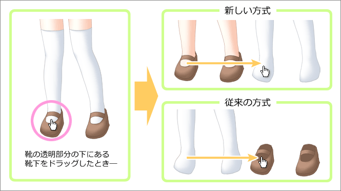

テンプレートファイルの左上には「モード切替」が表示されます。 クリックすると標準モードと互換モードを交互に切り替えます。モードの詳細は下記の通りです。
過去のバージョンでは、セルをドラッグする際は透明部分もドラッグの対象となっていました。 本バージョンは、HTML5の機能や画像フィルター機能を使う新しい方式に対応し、 下図のように透明部分がドラッグされることがなくなりました。 これによって重なり合っているセルや、小さなアクセサリーなどのセルを動かしやすくなります。

但しこの新しい方式は、下記の条件では使用できません。その場合は透明部分をドラッグの対象にする従来の方式で動作します。
条件によって使用できない場合がありますので、着せ替えを製作される際はモード切替で互換モードに切り替えて、 従来の方式でも遊べることをご確認されることをおすすめします。
しおりのどうぐばこの動作設定を行う場合は、tool.html をテキストエディタで開いて、 先頭の方にある設定項目を編集します。項目の詳細は下記の通りです。
0 を指定すると標準モードに、1 を指定すると互換モードになります。初期値は 0 です。
テンプレートファイルと同様に、しおりのどうぐばこもモード切替が可能です。 互換モードにすると、セルの透明部のつかみ判定は行われません。 通常変更の必要はありませんが、正常に動作しない場合は互換モードにすると改善されることがあります。
セル移動時の遊び範囲を指定します。単位はピクセルです。初期値は 4 です。
セルを移動する際に、わずかな操作では移動しないように遊び範囲が設けられています。 これは Photoshop の移動ツールに似た動作で、セルを触ってステータス表示を確認する際などに、 間違って移動してしまう可能性を減らします。0 を指定すると過去のバージョンと同じ動作になります。
セットの最大数は通常は５個ですが、例えば１０個に増やす場合は、 テキストエディタでファイルを次のように変更します（太字部分を追加／変更してください）。
１５行付近のセット最大数を変更します。
setmax: 10 // セット最大数
文末付近の切り替えボタンを増やします。
<label><input type="radio" name="setchg" value="0" onclick="sets.change(0)" checked>0</label> <label><input type="radio" name="setchg" value="1" onclick="sets.change(1)">1</label> <label><input type="radio" name="setchg" value="2" onclick="sets.change(2)">2</label> <label><input type="radio" name="setchg" value="3" onclick="sets.change(3)">3</label> <label><input type="radio" name="setchg" value="4" onclick="sets.change(4)">4</label> <label><input type="radio" name="setchg" value="5" onclick="sets.change(5)">5</label> <label><input type="radio" name="setchg" value="6" onclick="sets.change(6)">6</label> <label><input type="radio" name="setchg" value="7" onclick="sets.change(7)">7</label> <label><input type="radio" name="setchg" value="8" onclick="sets.change(8)">8</label> <label><input type="radio" name="setchg" value="9" onclick="sets.change(9)">9</label>
index.html を上手く書き換えると、 tool.html の変更を行わなくてもセットを増やせますが、しおりのどうぐばこ編集時に貼り付けデータの一部が失われる原因になるので、 tool.html も一緒に書き換えるようにしてください。